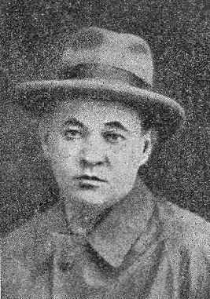

Справжнє прізвище Борис Гурій. Народився 8.04.1903 р. в селищі Покровське на Катеринославщині у родині вчителя. Після смерті батька 1914 р. перебрався до Катеринослава, навчався в тамтешньому ІНО, у 1927-му перевівся до Київського ІНО на третій курс історичного факультету. Перші вірші надрукував у 1924 р. в журналах "Червоний Шлях", "Зоря", "Нова громада", "Життя й Революція" та ін. Видав книжки прози "Листи з Криму" (1927), "Гармонія і свинушник" (1928), "Десята секунда" (1929), "Будні", "Ненависть", "П'яниці" (1930), "В бою" (1931). Належав до угруповань "Ланка" і МАРС.
За спогадами дружини Євгена Плужника, Б. Тенета в передчутті арешту снував доволі наївні плани: "Небезпека наближається, скоро і по нас прийдуть, а жити так хочеться, що, здається, я зроблю так: піду до річки, залишу свій одяг на березі, покладу в кишеню всі документи на ім'я Бориса Тенети, а сам на голову нав'яжу який-небудь одяг такий, щоб можна лише було прикрити грішне тіло, перепливу річку… і нема мене… піду, куди очи глядять без документів, без нічого. А хтось знайде мій одяг на березі з документами, передасть у відділ розшуку міліції, міліція – в НКВС. Ну, що ж, скажуть, утопився сам раніше, ніж ми його утопили".
Письменник навіть написав з відчаю листи Сталіну й Горькому, благаючи звернути увагу на ситуацію в Україні, де ув'язнюють невинних людей. Б. Тенету арештували 20.01.1935 р. на Кавказі, куди він поїхав до родини. В сухумській в'язниці він зробив спробу покінчити життя самогубством. Його врятували і відправили до Києва, встановивши суворий нагляд, щоб не повісився і не порізав вени. Але 6.02.1935 р. письменник уночі під ковдрою подер рушника і кальсони, прив'язав один кінець за бильце ліжка і затягнув собі на шиї петлю, дотримавши обіцянки: "Мене бандити не розстріляють, я не дамся…"